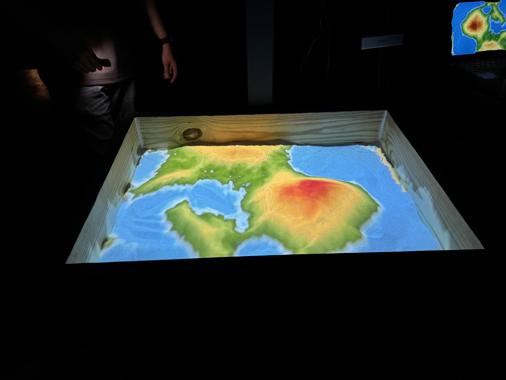
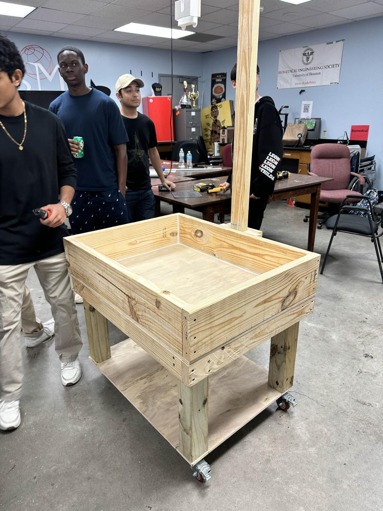
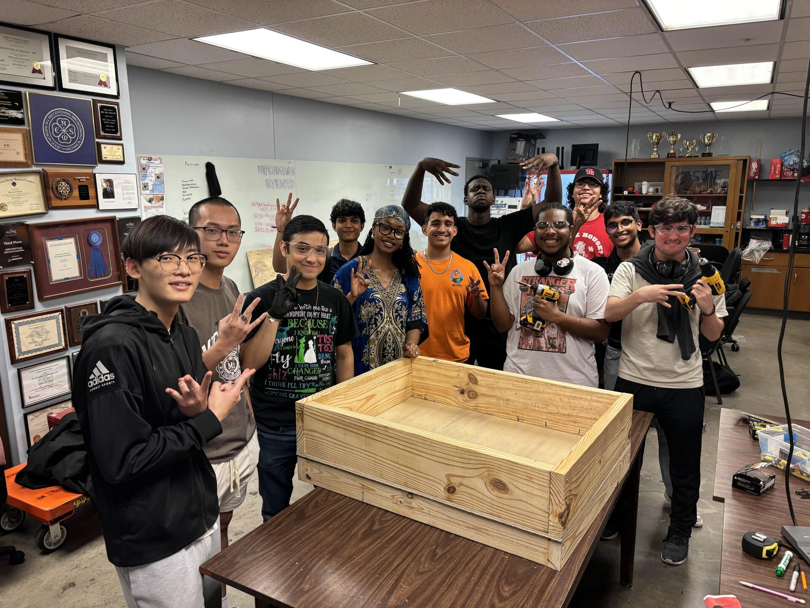

ASME UH • PROJECTS COMMITTEE
Augmented Reality Sandbox
A real-time augmented reality system that transforms physical sand topography into an interactive digital environment.

OVERVIEW
Combining Physical Topography with Augmented Reality
This project was developed by the University of Houston ASME organization to create a real-time integrated augmented reality system.
Users physically shape the sand to create different topographic surfaces. The system scans those changes into a computer in real time and uses the detected terrain as the background for interactive graphics, visual effects, and simulations.
MY ROLE
ASME Projects Committee Member
I worked on the project as a member of the University of Houston ASME Projects Committee, contributing to the development, assembly, and implementation of the augmented reality sandbox system.
The project gave our team experience integrating physical hardware with computer-based sensing and visualization to create an interactive engineering demonstration.
PROJECT DETAILS
Real-Time Terrain Visualization
The system continuously monitors the shape and height of the sand surface. As the user changes the terrain by hand, the physical topography is captured and processed by the computer in real time.
Digital graphics are then mapped onto the physical terrain, allowing the sandbox to respond immediately as hills, valleys, slopes, and other features are created.
PHOTO GALLERY
Development & Demonstration


DEMONSTRATION
AR Sandbox in Operation
The demonstration shows the system responding in real time as the physical sand terrain is reshaped.